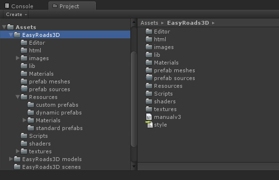

|
EasyRoads3D V3 Manual | |
Package Contents
Folders 
/EasyRoads3D/Editor/ This folder is used for editor scripts
/EasyRoads3D/html/ and /EasyRoads3D/images/ These are used for the manual which is also available online through the most right Help tab in the Inspector: http://unityterraintools.com/EasyRoads3D/v3/manualv3.html
/EasyRoads3D/lib/ This folder is used for scripts
/EasyRoads3D/Materials/ It is recommended to use the material folders mentioned further below. This folder includes additional material setups. Currently included is a decal material properly setup (without textures) to be used for start / end decals.
/EasyRoads3D/prefab meshes/ The generated mesh assets for custom crossing / connection prefabs will be stored in this folder
/EasyRoads3D/prefab sources/ Crossing prefabs generated with the provisional crossing creator utility will be stored in this folder
/EasyRoads3D/Resources/custom prefabs/ Custom crossing / connection prefabs based on mesh models will be stored in this folder. All prefabs will be listed in the crossing / connection tab (3rd from the left) in the Inspector.
/EasyRoads3D/Resources/dynamic prefabs/ Dynamic crossing / connection prefabs generator through the built-in crossing system will be stored here. All prefabs will be listed in the crossing / connection tab (3rd from the left) in the Inspector.
/EasyRoads3D/Resources/Materials/crossings/ Any crossing material stored here will be listed in the various material dropdowns related to assigning materials to crossing connections. By storing these materials in this folder you will be able to select them quickly from the dropdowns. This is optional, you can also manually assign materials to crossings.
/EasyRoads3D/Resources/Materials/roads/ Any road material stored here will be listed in the various material dropdowns related to assigning materials to roads objects. Jus like for crossings, by storing these materials in this folder you will be able to select them quickly from the dropdowns. This is also optional, you can also manually assign materials to crossings.
/EasyRoads3D/Resources/Materials/roundabouts/ The same as above but for roundabouts
/EasyRoads3D/Resources/Materials/sidewalks/ The same as above but for sidewalks
/EasyRoads3D/Shaders/ You can use your own materials and shaders. The package itself comes with a variety of shaders showing how to take advantage of UV and vertex color options defined in both the road settings and side object settings. Visit the Materials & Shaders tutorial section on our website for more info. Some shaders for blending textures are especially useful on I Connectors.
/EasyRoads3D/Textures/editor/ The textures in this folder are used inside the Unity Editor, they are required.
/EasyRoads3D/Textures/roads/ These are the default road textures.
Additional Assets The tool itself does not include additional road and side object assets to keep the import clean and package updates from the asset store fast. Additional assets can be imported from the demo project, the demo project package itself could also be used as a starting point.
|
|